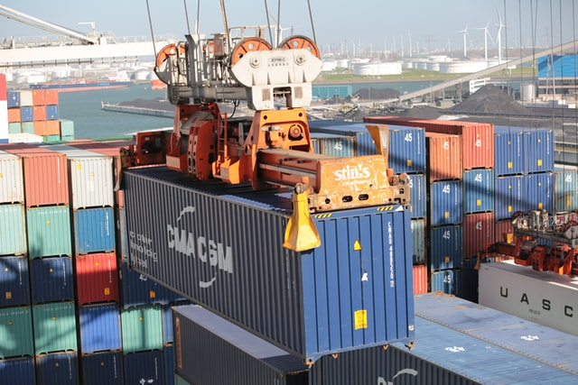
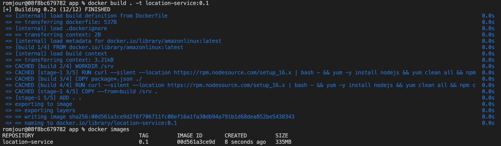
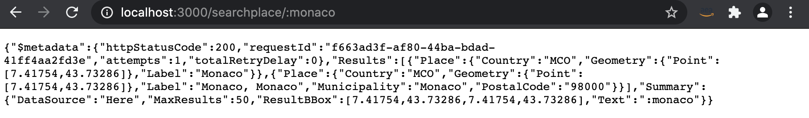
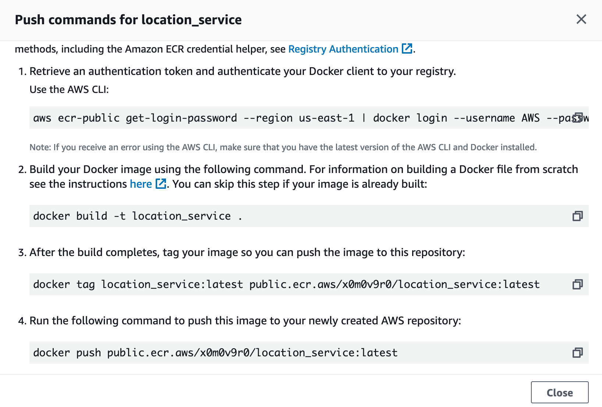
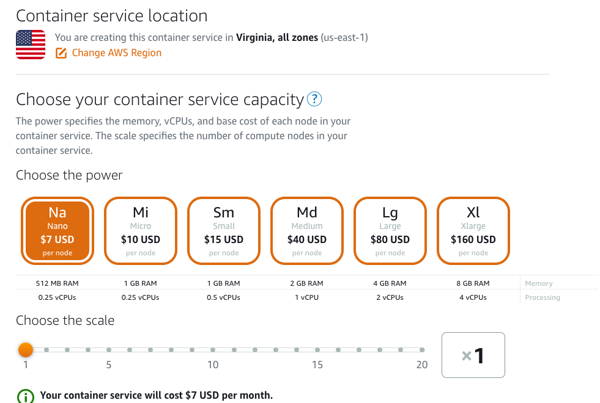
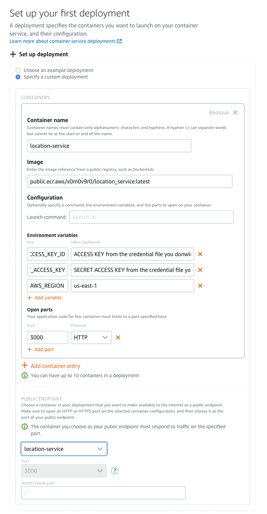
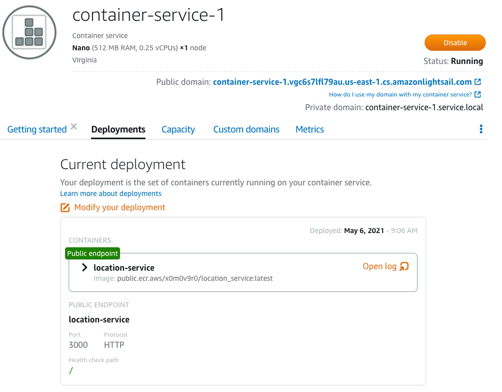
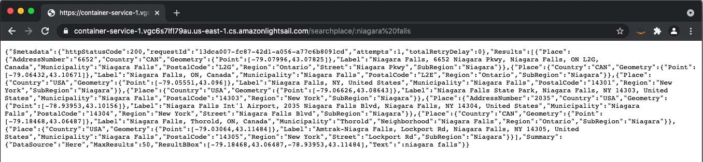
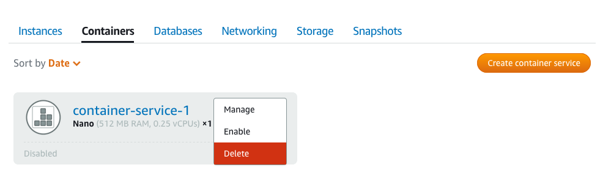

AWS Containers a2z - Step 1 Lightsail

(Photo by Bernd Dittrich on Unsplash)
Welcome back to the AWS Containers a2z blog series! We discussed in the introduction about our goals and how we will get there. We are going to build a Cloud Native application using AWS Container services. This application will be as realistic as possible, not your standard 'hello-world'. As we are talking about containers, we are going to build a logistic app. This logistic app will have location-based capabilities and we use Amazon Location Service that was announced at Re:Invent 2020.
In this first episode of the saga, as we are experimenting with containers and Location Service, we are going to leverage Amazon Lightsail to run a container in the Cloud.
Amazon Lightsail
As my colleague Nathan Peck described it, Amazon Lightsail is ideal if you are new to the cloud, and just want to deploy a container on the internet without dealing with a whole lot of complexity. It is a good solution to run simple containerized applications for a fixed, monthly price. The magic behind Lightsail is that you don’t have to manage any infrastructure in the cloud (VPC, subnets, Internet gateways…), Lightsail will deploy your workload in a fully managed account with all the necessary building blocks that will be auto-magically configured for you.
Prerequisites:
Before we start, we need a few thing.
- You need an AWS account with a IAM User.
- The AWS CLI allows you to interact with AWS services from a terminal session. Make sure you have the latest version of the AWS CLI installed on your system. (Download here for Mac, for Windows or for Linux)
- A text editor or IDE of your choice. I’ll be using VSCode.
- Docker Desktop installed and running on your development machine.
- Git or the GitHub Desktop to clone the code from our repository.
Building and testing our container
The first step will be to clone the project on your machine:
git clone https://github.com/aws-containers/aws-containers-a2z.git
The code is located in the folder step\ 1\ -\ Lightsail/app/. Go to this directory and you will see three files in that folder:
Dockerfile: the file that describes how build the containerlocation.js: the actual code of the location service written in Node.jspackage.json: the list of packages Node.js needed to execute the code
Let’s build the container (assuming you are in the step\ 1\ -\ Lightsail/app/ folder):
docker build . -t location-service:0.1
At the end of the process, the container image shall be ready and you can check that with the command docker images

Before we can run this container, we need to create a role and a policy to be able to use the Location Service.
Go to the AWS console > Identity and Access Management (IAM) > Policies and let’s create a policy called LocationServicePolicy with the following Permissions.
We could restrict a bit more following the principle of Least Privilege (see the Amazon Location Service’s documentation to know more) but we will leave it as is for now as we will add more capabilities down the road. Next, we will create a user LocationServiceUser with Programmatic Access and attach the existing LocationServicePolicy directy. Once the user is created, download the credentials and keep them in a secure place.
We are ready to run locally our container and check that the code is actually working. Use the following command to run the container locally:
You can now test with your favorite browser (or curl) http//localhost:3000/searchplace/: followed by the name of the place you are looking for. It could be an address, a well known site or a city.

Yay!
Running in the cloud
At this stage, we have a working container. Let’s publish now the image in a container repository like Amazon ECR Public. Go to the AWS console > Elastic Container Registry and create a public repository. I named it location_service. Follow the intructions to push your container image to your public repository.
 (Don’t forget to scroll down to see all 4 commands…)
Once the image is uploaded, you copy the uri and save it somewhere so we can use it with Lightsail. Connect to the Lightsail console and create a container service. For this test, go with a Nano node (the cheapest at $7 a month). As you can see, you can easily scale up the node size as well as the node count as your traffic grows. For this experimentation, we are going to run only one container.

Next, we are going to setup a custom deployment giving it a name, the image’s uri that we saved earlier from ECR Public, our environment variables (AWS_ACCESS_KEY_ID, AWS_SECRET_ACCESS_KEY and AWS_REGION) as well as the port number (3000 in our case).

Validate the deployment and wait a few minutes for the infrastructure to be created. Very soon, you will see that it is running.

Lightsail gives you a URL for your application and you can add your own custom domain alias to point your own domain name at the Lightsail container service. Let’s try it.

Our location service is now running in the cloud! Don’t forget to clean the environment after you have completed your tests:
- Delete the ECR Public repository with your container image from the console.
- Terminate the Lightsail service, click on the three dots next to the Container service’s name and click delete

Conclusion
In this first step, we experimented with the Amazon Location Service to verify addresses and find the location of places. We were able to run it as a simple service that we shipped as a container to the Cloud. Lightsail did the heavy lifting of creating the infrastructure for us. With Lightsail, it is possible to run several containers in a single deployment. We will explore another tool in the next post of our series: Docker Compose to deploy a multi-service application on Amazon ECS.